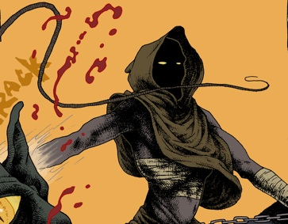

Jackson TempleHalf man half machine Jackson Temple lives in Outpost 12, the ruins of a once great city. He scavenges the wastes fixing what he can trying to reclaim the lost wonders of a dead world. His gift with machines was passed to him from his father. His troubled past and the loss of his family have shaped a hardened soul waiting for revenge. Jackson is second generation outpost dweller, he was born in the outposts, and has never known anything else. A man on the edge, one small nudge and he may lose control....
LugalOne of the most feared warriors of the vampire nation. He is the right hand of Dracula himself. His victims do not know his name but when they see him their fate has been sealed. A fierce warrior with a keen intellect, and undeniable presence. Unlike most who are turned he retains his thoughts and wit. He has no memory of his life prior to his vampiric rebirth, all he knows is that he serves the masters will. Cruel and calculating he travels to outpost 12 to retrieve what was stolen....
LugalOne of the most feared warriors of the vampire nation. He is the right hand of Dracula himself. His victims do not know his name but when they see him their fate has been sealed. A fierce warrior with a keen intellect, and undeniable presence. Unlike most who are turned he retains his thoughts and wit. He has no memory of his life prior to his vampiric rebirth, all he knows is that he serves the masters will. Cruel and calculating he travels to outpost 12 to retrieve what was stolen....
“Saint” Isaac the ProphetShunned from his home, for a heinous crime, Isaac wanders the land preaching and studying the old worlds religions and tomes. Whether he is a wise man, or a lunatic is of much debate. Little is known of his origins or his whereabouts for the last few years, only that he arrived in outpost 12 a month ago. Every night since he has stood in the streets preaching the doom of mankind. His own secrets haunt him in his sleep. He knows the long night is coming.
Benjamin “Doc” CarterBenjamin is a man of many talents and few morals. This has served him well and saved many lives...and lost a few along the way. He found a purpose alongside his best friend Hank, they worked night and day to find a solution to the vampire plague. After the death of hank at the hands of those demons he withdrew farther into his experiments. Called a madman for his controversial medical procedures, he finally left the surface world...Outpost 12 may need Doc’s madness if it is to survive.
Benjamin “Doc” CarterBenjamin is a man of many talents and few morals. This has served him well and saved many lives...and lost a few along the way. He found a purpose alongside his best friend Hank, they worked night and day to find a solution to the vampire plague. After the death of hank at the hands of those demons he withdrew farther into his experiments. Called a madman for his controversial medical procedures, he finally left the surface world...Outpost 12 may need Doc’s madness if it is to survive.
Susan Ann JanusSuzy was born in outpost twelve. She is the last of five siblings the rest have either died or been turned. She operates a small food shop in outpost twelve. She has become close with Jackson Temple, they often go scouting in the wastes together. She is a crack shot with a bow, and a great survivalist. Her hopes and dreams, if one is to be allowed such things in this world, are simple. She wishes to move to the north to find wilderness untouched by the vampire scourge. Her fate unknown to her rests with a mysterious traveler....